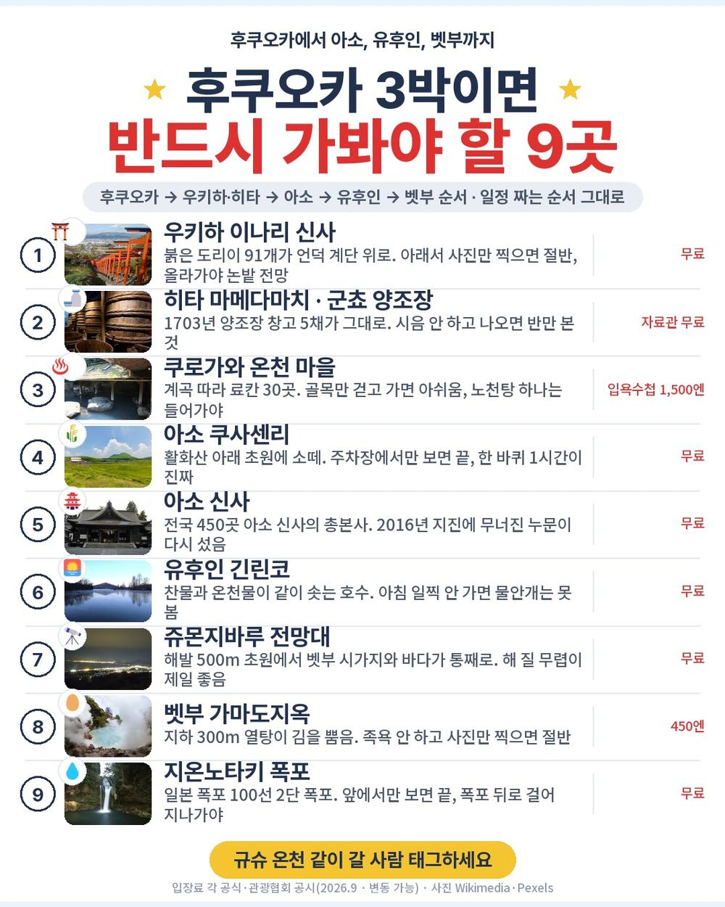
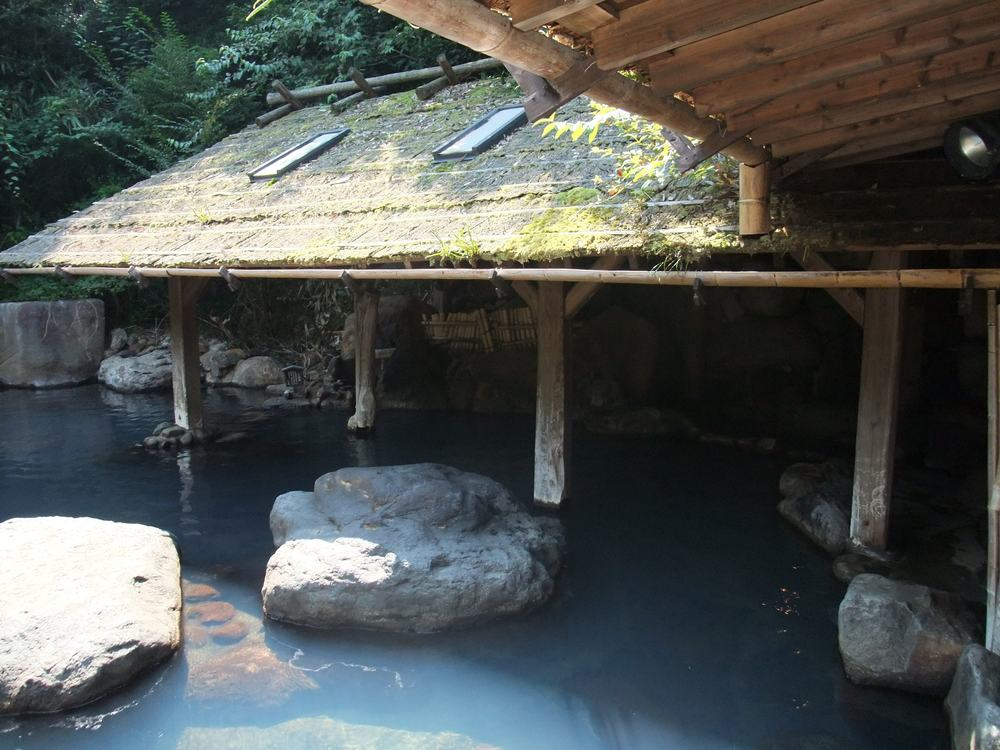
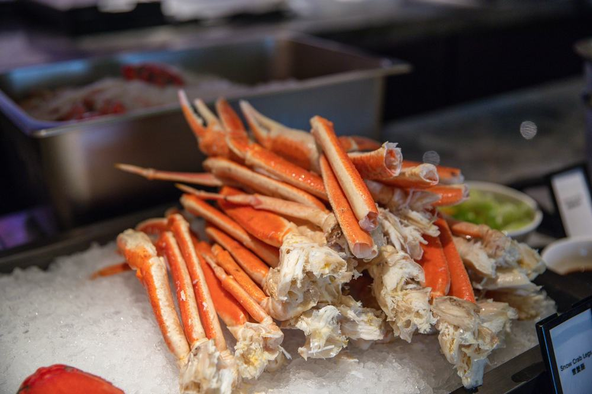
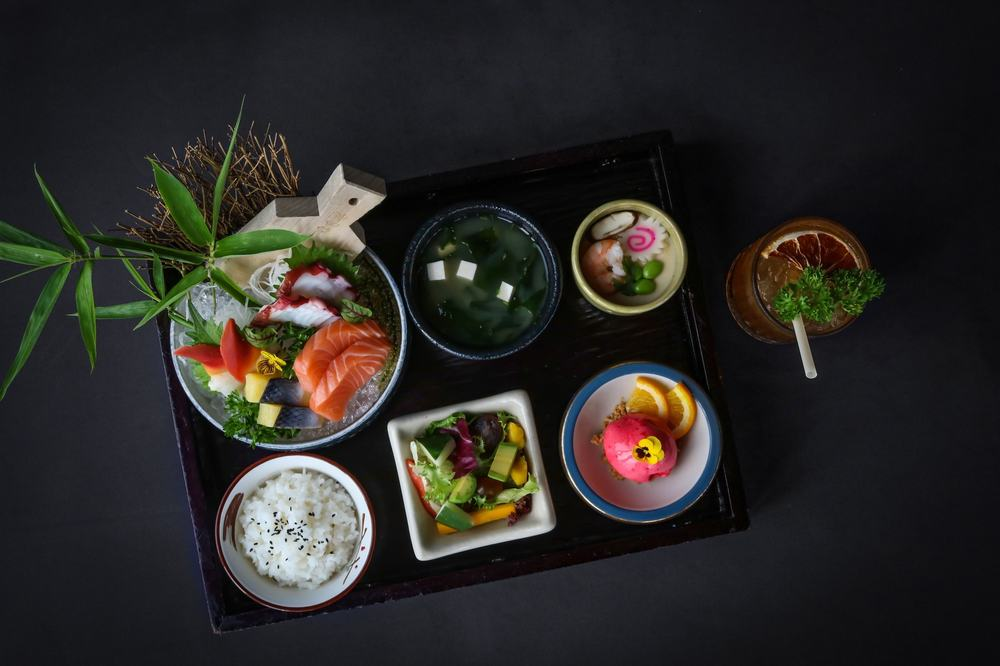
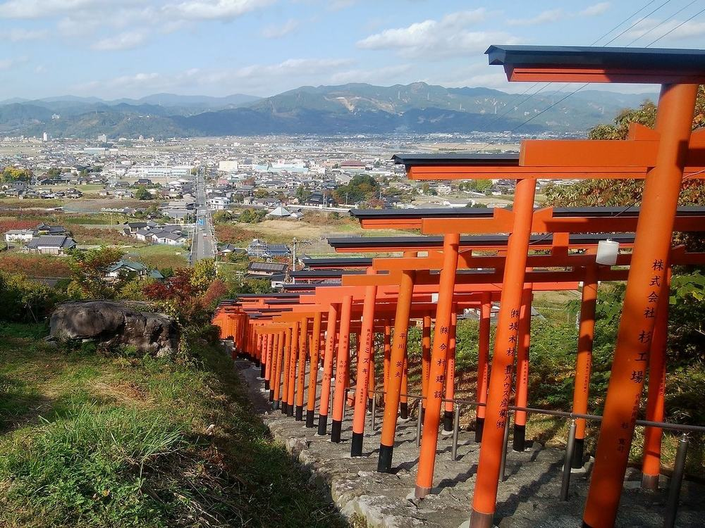
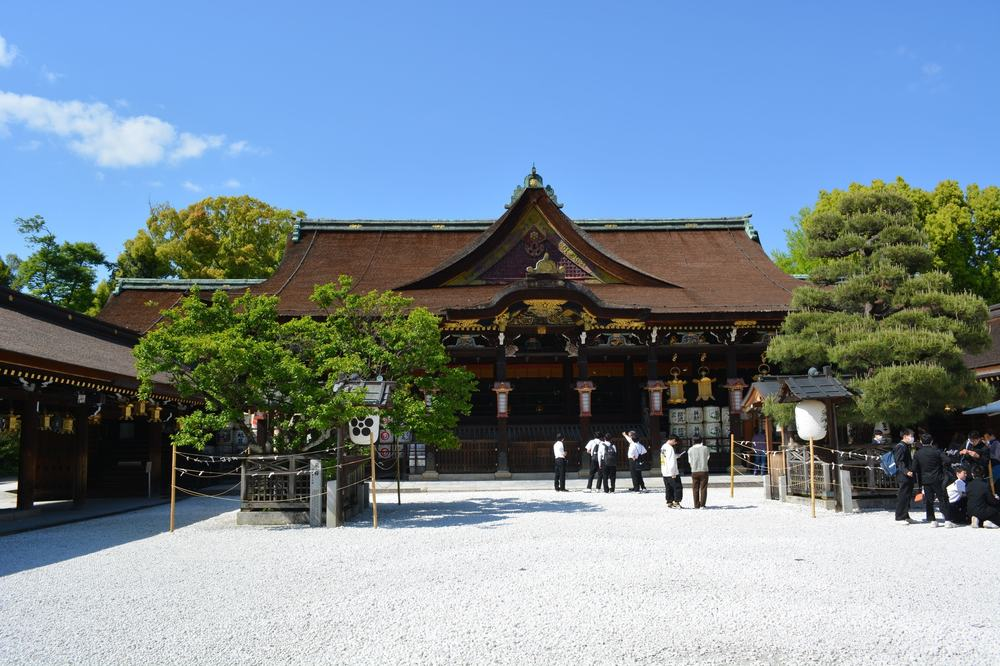
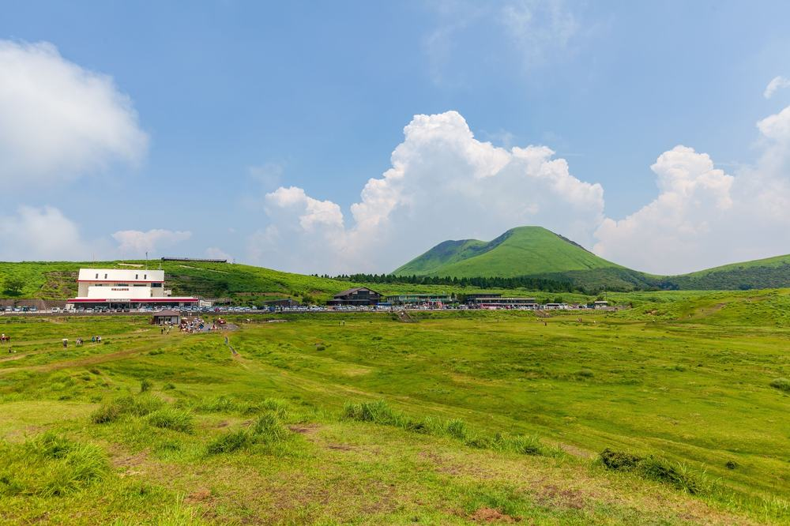

후쿠오카 온천 패키지 가격 99만원, 힐튼에 온천 호텔 두 밤, 대게 무한리필까지 되는 이유 (노랑풍선 · 이스타항공 직항 · 3박 4일)
결론 — 추천. 온천 호텔에서 두 밤 자고 특급 호텔까지 하루 묵고 싶은 분, 대게·술을 배부르게 드시고 싶은 분, 선택관광 권유 없이 다 포함된 걸 원하는 분에게 맞음. 첫날 저녁을 알아서 사 먹는 게 싫은 분, 버스 4시간 반을 못 견디는 분, 수영복 입고 들어가는 온천이 싫은 분은 고르면 안 됨.
부모님 규슈 온천 여행을 알아보다가 99만 9천원짜리에 힐튼 1박, 온천 호텔 2박, 대게 무한리필에 가이세키까지 다 들어 있는 게 보여서 붙잡았음. 보통 이 값이면 온천 호텔은 하루고 나머지는 시내 비즈니스호텔인데 이건 온천이 이틀임. 어디까지가 진짜 포함인지 항목별로 뜯어봤음.

| 항목 | 내용 |
|---|---|
| 여행사 | 노랑풍선 |
| 가격 | 999,000원 (1인 · 성인 기준 · 10월 중순 출발) |
| 일정 | 3박 4일 · 낮 12시 30분 출발 · 오후 4시 25분 귀국 |
| 항공 | 이스타항공 직항 (인천-후쿠오카 1시간 20분 · 기내식 없음 · 위탁 15kg) |
| 숙소 | 힐튼 후쿠오카 시호크 1박 + 아소 온천 호텔 1박 + 벳부 모리노유 리조트 1박 (2인 1실 · 조식 3회) |
| 가는 곳 | 라라포트 · 우키하 이나리 신사 · 히타 마메다마치·군쵸 양조장 · 쿠로가와 온천마을 · 아소 쿠사센리 · 아소 신사 · 유후인 민예촌·긴린코 · 쥬몬지바루 전망대 · 가마도지옥 · 지온노타키 · 다자이후 텐만구 |
| 반드시 더 내는 돈 | 가이드·기사 경비 4,000엔 (현지 지불) |
결론부터 말하면 같은 동선을 직접 짜면 값은 비슷한데 운전을 사흘 해야 함. 쿠로가와·아소·유후인·벳부를 하루씩 잇는 건 렌터카 없이는 안 되고, 온천 호텔 두 곳의 2식 요금이 자유여행 값의 절반을 차지함. 값보다 동선이 이 상품의 값어치임.
| 순서 | 다루는 것 | 한 줄 결론 |
|---|---|---|
| 1 | 구성 뜯어보기 | 식사 8회 · 특식 2회 · 선택관광 0 · 현지 필수는 4,000엔 |
| 2 | 일정 살펴보기 | 첫날 라라포트, 둘째 날 우키하→아소, 셋째 날 유후인→벳부, 넷째 날 다자이후 |
| 3 | 자유여행 VS 패키지 | 직접 짜면 106만원, 패키지는 경비까지 105만원 — 값은 같고 운전이 다름 |
1. 구성 뜯어보기
요약 — 항공·호텔 3박·식사 8회·관광 10곳 입장·가이드·보험·어댑터까지 99만 9천원. 현지에서 반드시 내는 건 가이드·기사 경비 4,000엔. 다만 첫날 저녁은 자유식이고 쇼핑이 1회 있음.
1-1. 값에 뭐가 들었나
1인 99만 9천원임. 3박 4일 기준임.
| 항목 | 상태 |
|---|---|
| 왕복 항공권 | 포함 (이스타항공 직항 · 세금·유류할증 포함 · 위탁 15kg · 기내식 없음) |
| 힐튼 후쿠오카 시호크 1박 | 포함 (2인 1실 · 조식) |
| 아소 온천 호텔 1박 | 포함 (2인 1실 · 조식 · 석식 대게 무한리필 + 드링크바 60분) |
| 벳부 모리노유 리조트 1박 | 포함 (2인 1실 · 조식 · 석식 가이세키) |
| 식사 8회 | 포함 (자유식 1회 · 1일차 저녁만) |
| 관광 10곳 | 라라포트 · 우키하 이나리 · 군쵸 양조장 · 쿠로가와 · 쿠사센리 · 유후인 민예촌 · 긴린코 · 가마도지옥 · 쥬몬지바루 · 다자이후 입장 포함 |
| 온천 계란 · 라무네 · 110V 어댑터 | 포함 (1인 1개) |
| 한국어 가이드 · 전용 버스 | 포함 (인천 미팅부터 전 일정) |
| 여행자보험 | 포함 |
| 가이드·기사 경비 4,000엔 | 불포함 (현지 지불 · 성인·소아 동일) |
| 인솔자 | 불포함 항목 (일본은 한국어 가이드가 인솔자를 겸함) |
| 쇼핑 | 1회 (후쿠오카 잡화 · 약 40분 · 환불 불가) |
| 선택관광 | 없음 |
일본 패키지는 가이드·기사 경비를 현지에서 엔화로 걷는 게 보통이고 이 상품도 그럼. 4,000엔이면 우리 돈 3만 8천원 안팎임. 상품가에 이걸 더해서 1인 104만원으로 보면 됨.
| 항목 | 금액 | 비고 |
|---|---|---|
| 가이드·기사 경비 | 4,000엔 (약 3만 8천원) | 필수 · 현지 엔화 현금 |
| 첫날 저녁 자유식 | 약 1만 5천원 | 라라포트 푸드코트 (2인 3만원) |
| 야외 온천 수영복 대여 | 300엔 (약 3천원) | 모리노유 야외 온천만 · 본인 것 가져가면 0 |
| 음료·주류 | 끼니당 1천~3천원 | 2일차 저녁은 드링크바 포함이라 0 |
| 합계 (필수만) | 약 3만 8천원 | 자유식·수영복까지 약 5만 6천원 |

1-2. 힐튼 하루, 온천 호텔 이틀
첫 밤은 힐튼 후쿠오카 시호크임. 하카타만 바닷가에 선 35층 호텔이고 옆이 야구장 돔. 오후 1시 50분에 내려 라라포트 들렀다 들어가는 하루라 창밖 바다 보며 쉬기 좋음. 2인 1실 조식 포함.
둘째 밤이 아소 온천 호텔(아소카도만). 이 밤의 핵심은 저녁임. 호텔 식당에서 게 스테이크를 무한리필로 주고 드링크바가 60분 붙음. 상품명에 '주류무제한'이라 적혀 있음. 먹고 나서 대욕장 온천.
셋째 밤은 벳부 모리노유 리조트. 저녁이 가이세키고, 야외 온천은 수영복을 입고 들어감. 없으면 300엔에 빌려줌. 실내 대욕장은 여느 온천처럼 남녀 구분.
어디서 확인하나 — 일정표 각 날 「숙박」 칸에 힐튼 후쿠오카 씨 호크 / 아소카도만 호텔 / 벳부 모리노유 리조트가 적혀 있음. 2일차 숙박 아래 '게 스테이크 무제한/드링크바 제공 (60분)', 3일차 아래 '야외 온천 이용시 수영복 필수 · 대여 300엔' 문구가 있음. 「상기 일정과 호텔은 현지 사정에 의해 변경될 수 있습니다」 문구도 있으니 예약 전화에서 한 번 확인함.

1-3. 식사 여덟 끼, 자유식은 첫날 저녁 한 번
식사는 8회임. 2일차 조식·현지식·호텔식(대게), 3일차 조식·현지식·호텔식(가이세키), 4일차 조식·현지식. 자유식은 1일차 저녁 한 끼뿐이고, 오후 도착이라 라라포트 푸드코트에서 먹으면 됨. 이스타항공은 기내식이 없으니 아침을 먹고 나가는 게 좋음.
어디서 확인하나 — 일정표 각 날 식사 칸에서 '자유식' 글자를 셈. 이 상품은 1임. 「포함사항」 마지막 줄 '석식 가이세키 + 게뷔페 포함', 「불포함사항」 '석식 1회'가 서로 맞는지 봄.

1-4. 선택관광이 없고, 쇼핑은 한 번
이 상품은 선택관광 항목이 아예 없음. 관광 10곳 입장이 다 상품가 안이고, 가마도지옥에서 온천 계란과 라무네까지 줌. 쇼핑은 4일차 후쿠오카 면세점(잡화) 1회 약 40분. 구매 자유, 환불 불가.
어디서 확인하나 — 상품 페이지 「선택관광」 칸이 비어 있는지 봄. 「쇼핑」 칸에서 매장 수·시간·'환불' 표시를 봄. 「관광」 칸 숫자(10회)와 일정표 관광지 개수가 맞는지 셈.
출발일별 요금 확인하기
https://naver.me/F4WgYKXO
| 질문 | 답 |
|---|---|
| Q. 쇼핑 없나요? | 1회 있음. 4일차 후쿠오카 면세점 약 40분, 구매는 자유 |
| Q. 가이드 경비는 따로 내나요? | 냄. 1인 4,000엔을 현지에서 엔화로 지불함. 소아도 같음 |
| Q. 출발확정인가요? | 아님. 최소 15명이 모여야 하고, 예약 후 담당자 통화에서 확정 여부를 안내함. 미달이면 연합 상품으로 갈 수 있음 |
2. 일정 살펴보기
요약 — 1일차 낮 12시 30분 출발, 1시 50분 도착해 라라포트와 힐튼. 2일차 우키하 → 히타 → 쿠로가와 → 아소, 대게 무한리필. 3일차 아소 신사 → 유후인 → 벳부, 가이세키. 4일차 지온노타키와 다자이후, 오후 3시 비행기. 버스는 나흘에 약 11시간임.
| 일차 | 가는 곳 | 식사 | 숙소 |
|---|---|---|---|
| DAY 1 | 인천 12:30 출발 → 후쿠오카 13:50 · 라라포트 | 석식 자유식 | 힐튼 후쿠오카 시호크 |
| DAY 2 | 우키하 이나리 신사(도리이 91개) → 히타 마메다마치·군쵸 양조장 → 쿠로가와 온천마을 → 아소 쿠사센리 | 조식 · 현지식 · 대게 무한리필 | 아소카도만 온천 호텔 |
| DAY 3 | 아소 신사 → 유후인 민예촌·긴린코 → 벳부 쥬몬지바루 전망대 · 가마도지옥(온천 계란·라무네) | 조식 · 현지식 · 가이세키 | 벳부 모리노유 리조트 |
| DAY 4 | 지온노타키 → 다자이후 텐만구 → 면세점 → 후쿠오카 15:00 출발 → 인천 16:25 | 조식 · 현지식 | — |

2-1. 첫날은 낮 비행기라 여유가 있음
인천공항 10시 미팅, 12시 30분 출발, 13시 50분 후쿠오카 도착임. 공항이 시내에 붙어 있어 15분이면 라라포트. 규슈 최대 쇼핑몰이고 마당에 실물 크기 건담이 서 있음. 저녁은 여기 푸드코트(1,450석)에서 자유식, 그리고 힐튼.
2-2. 둘째 날이 제일 많이 움직임
후쿠오카 → 우키하 약 1시간 10분, 히타 30분, 쿠로가와 1시간 20분, 아소 50분. 버스만 약 4시간 반임. 대신 그날 우키하 도리이 91개, 히타 옛거리와 300년 양조장 시음, 쿠로가와 온천 마을 산책, 아소 쿠사센리 초원까지 네 곳을 다 보고 대게로 끝남.
어디서 확인하나 — 일정표 2일차에 '우키하 이동 → 히타 이동 → 구마모토 이동 → 아소 이동'이 차례로 적혀 있음. 이동 시간은 안 적혀 있으니 지도로 가늠해야 함. 쿠사센리는 '한 바퀴 1시간'이라 적혀 있는데 초원 입구에서만 봐도 됨.
| 일차 | 구간 | 시간 |
|---|---|---|
| DAY 1 | 공항 → 라라포트 → 힐튼 | 약 40분 |
| DAY 2 | 후쿠오카 → 우키하 → 히타 → 쿠로가와 → 아소 | 약 4시간 30분 |
| DAY 3 | 아소 → 유후인 → 벳부 | 약 3시간 |
| DAY 4 | 벳부 → 지온노타키 → 다자이후 → 공항 | 약 3시간 |
| 합계 | 약 11시간 |
2-3. 셋째 날은 유후인과 벳부
아소 신사(전국 450곳의 총본사)를 보고 동쪽으로 1시간 반, 유후인. 긴린코 호수는 찬물과 온천물이 같이 솟아 아침이면 물안개가 깔리고, 민예촌은 백 년 전 서민 살림을 모아 둔 골목임. 벳부에서는 해발 500m 쥬몬지바루 전망대와 가마도지옥. 온천 계란·라무네를 1인 1개 줌. 저녁은 모리노유에서 가이세키.

2-4. 넷째 날 폭포와 다자이후, 오후 비행기
지온노타키는 일본 폭포 100선에 든 2단 폭포로 폭포 뒤로 걸어 지나갈 수 있음. 다자이후 텐만구는 학문의 신을 모시는 신사라 참배길 우메가에모치(구운 찹쌀떡)가 명물. 면세점 40분 들르고 점심 먹고 후쿠오카 15시 출발, 인천 16시 25분 도착.

| 질문 | 답 |
|---|---|
| Q. 많이 걷나요? | 우키하 도리이 계단과 쿠사센리 한 바퀴가 걷는 구간인데 둘 다 원하는 만큼만 가면 됨. 나머지는 평지 골목·참배길 |
| Q. 10월 중순에 춥나요? | 후쿠오카 낮 20도 안팎, 아소·쿠로가와 산속 아침은 10도 안팎. 겉옷 하나 |
| Q. 온천에 수영복 꼭 입어야 하나요? | 모리노유 야외 온천만 그럼. 실내 대욕장과 아소 호텔 온천은 남녀 구분에 수영복 없이 들어감 |
3. 자유여행 VS 패키지
요약 — 같은 동선을 직접 짜면 1인 106만원쯤 나오고, 패키지는 가이드 경비와 첫날 저녁을 더해 105만원임. 값은 사실상 같음. 대신 자유여행은 렌터카를 사흘 운전해야 하고, 쿠로가와·아소·유후인·벳부를 하루씩 잇는 동선을 대중교통으로는 못 만듦.
같은 동선을 직접 짜면 얼마인지 계산해봤음. 패키지에 들어 있는데 자유여행이면 따로 내야 하는 돈까지 전부 넣었음. 환율은 100엔 = 940원으로 잡았음. 대부분 추정치라 근거 열에 적어 뒀음.
| 항목 | 자유여행 | 패키지 | 근거 |
|---|---|---|---|
| 왕복 항공 | 약 25만원 | 포함 | 인천-후쿠오카 LCC 10월 왕복 20~30만원대 (항공권 비교 사이트 월별 조회 · 추정) |
| 위탁수하물 15kg | 약 3만원 | 포함 | LCC 특가는 수하물 별도 · 왕복 (추정) |
| 힐튼 후쿠오카 시호크 1박 | 약 16만 5천원 | 포함 | 트윈 1박 3만 5천엔 안팎 ÷ 2 (추정) |
| 아소 온천 호텔 1박 2식 | 약 20만 5천원 | 포함 | 온천 호텔 2식 1인 2만 2천엔 안팎 (추정) |
| 벳부 모리노유 1박 2식 | 약 20만 5천원 | 포함 | 가이세키 포함 1인 2만 2천엔 안팎 (추정) |
| 식사 4끼 | 약 6만원 | 포함 | 호텔 2식 제외한 힐튼 조식 + 현지식 점심 3회 · 끼당 1만 5천원 (추정) |
| 렌터카 3일 · 연료 · 고속도로 | 약 11만 5천원 | 포함 (전용 버스) | 소형 3일 15만원 + 연료·통행료 8만원 ÷ 2 (추정) |
| 입장료 | 약 4천원 | 포함 | 가마도지옥 450엔 · 나머지 무료 (각 공식·관광협회 공시) |
| 온천 계란·라무네 · 어댑터 | 약 6천원 | 포함 | 500엔 + 어댑터 1천원 (추정) |
| 공항 ↔ 시내 | 약 5천원 | 포함 | 후쿠오카 지하철 왕복 (추정) |
| 여행자보험 | 약 1만원 | 포함 | 3박 4일 기준 |
| 가이드·인솔자 | 없음 | 한국어 가이드 (경비 4,000엔 현지) | 양쪽 다 4,000엔 기준으로 봄 |
| 합계 | 약 106만원 | 99만 9천원 + 가이드 경비 3만 8천원 + 첫날 저녁 1만 5천원 = 약 105만원 | 쇼핑 제외 |
숫자만 보면 값은 같음. 온천 호텔 두 곳의 2식 요금이 41만원으로 자유여행 값의 40%를 차지하고, 그걸 상품가 안에 넣은 것임.
그리고 표에 못 넣은 게 있음. 우키하-히타-쿠로가와-아소-유후인-벳부를 사흘에 잇는 건 대중교통으로 안 됨. 쿠로가와는 기차역이 없고 아소·유후인 사이 버스는 하루 몇 편임. 렌터카를 빌리면 되지만 사흘 내내 한 사람이 운전하고, 산길과 우측 핸들에 익숙해야 함. 버스 한 대가 나흘을 다 이어 주고 온천에 들어가 있는 동안 운전 걱정이 없는 게 이 상품의 값어치임.

어디서 확인하나 — 자유여행으로 갈 거면 후쿠오카 공항 렌터카와 쿠로가와·아소 사이 산길 시간을 먼저 봄. 온천 호텔은 2식 포함 요금으로 비교해야 패키지와 같은 조건임.
| 자유여행이 맞는 사람 | 패키지가 맞는 사람 |
|---|---|
| 운전 사흘이 괜찮고 산길이 익숙함 | 온천에 들어가 있는 동안 운전 걱정을 안 하고 싶음 |
| 유후인·벳부에 이틀씩 머물 것임 | 우키하·쿠로가와·아소까지 한 번에 볼 것임 |
| 온천 호텔 대신 시내 호텔에서 아낄 것임 | 온천 호텔 두 밤에 대게·가이세키가 목적임 |
| 규슈를 두 번 이상 가봤음 | 부모님을 보내드림 |
| 질문 | 답 |
|---|---|
| Q. 환전은 얼마나 하나요? | 가이드 경비 4,000엔 + 첫날 저녁 + 개인 비용. 상품 안내가 엔화 현금을 챙기라 적어 놨음. 1인 1만 5천엔이면 넉넉함 |
| Q. 혼자 가면 얼마 붙나요? | 싱글룸 사용료 260,000원이 전 일정 기준으로 붙음 |
| Q. 비자 필요한가요? | 불필요. 일본 입국 시 지문 인식 수속을 함 |
4. 정리
99만 9천원에 이스타항공 직항, 힐튼 1박, 온천 호텔 2박, 식사 8회(대게 무한리필·가이세키), 관광 10곳 입장, 온천 계란·어댑터까지 들어 있고 선택관광이 없음. 현지에서 반드시 내는 건 가이드·기사 경비 4,000엔임.
같은 동선을 직접 짜면 106만원이 나와서 값은 같음. 값보다 더 큰 건 쿠로가와와 아소, 유후인, 벳부를 버스 한 대가 이어 주고 온천 호텔 두 곳의 저녁이 다 들어 있다는 것임.
걸리는 건 첫날 저녁 자유식, 2일차 버스 4시간 반, 최소 15명, 모리노유 야외 온천 수영복 이 넷임. 전부 상품 흠이 아니라 맞는 사람을 가르는 조건임. 온천 호텔 두 밤과 대게·가이세키가 목적이면 이 구성이 맞음.
출발일별 요금 확인하기
https://naver.me/F4WgYKXO
같은 기준으로 후쿠오카 온천 패키지 고르는 법만 따로 정리한 글도 있음 — https://blog.naver.com/robotnady10/224418262827
함께 보면 좋은 글
참좋은여행 하노이·하롱베이 49만원, 유람선에 마사지까지 선택관광 0인 이유
https://blog.naver.com/robotnady10/224417476056
참좋은여행 나트랑 달랏 59만원, 5성 3박에 밥 9끼가 다 들어가는 이유
https://blog.naver.com/robotnady10/224417121855
이 글에는 제휴 링크가 포함되어 있으며, 링크를 통해 예약 시 일정 수수료를 받습니다. 가격은 동일합니다. 이 글은 10월 중순 출발 기준이며, 출발일에 따라 가격이 달라집니다.
사진 출처: fk_kurokawa_onsen_1 — Wikimedia Commons / fk_crab_feast_1 — Pexels / fk_kaiseki_dinner_1 — Pexels / fk_ukiha_inari_1 — Wikimedia Commons / fk_kinrinko_1 — Pexels / fk_dazaifu_1 — Pexels / fk_aso_kusasenri_1 — Pexels